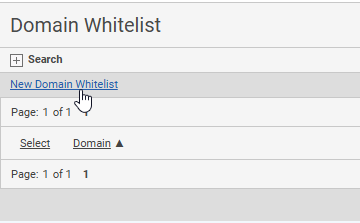

Administrators can specify URL domains that are allowed to be used within Advanced Calculations (EMS). This includes URLs for iFrames to embed content like web pages and web applications in the Portal and embedding Portal pages into other systems. A domain must be added to the whitelist for it to be accepted. There is no limit to the number of domains that can be whitelisted.
To whitelist a domain:

Once a domain has been added to the whitelist, users can embed content from the domain. Administrators can edit and delete domains on the whitelist.